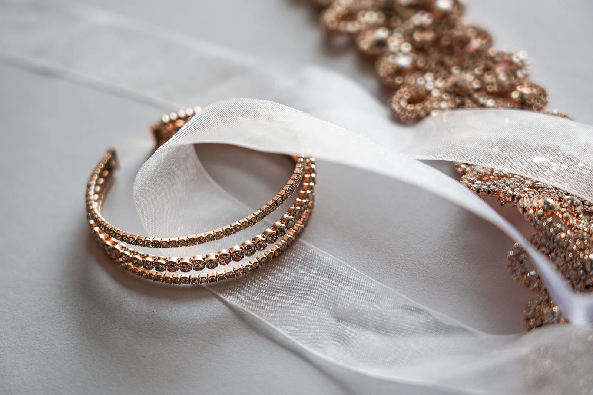

Gold & Silber
Metallfarbe und Oberfläche beeinflussen den Eindruck eines Schmuckstücks. Die Punze gibt Hinweise auf seinen Feingehalt.
Mehr über EdelmetalleGold, Silber und Edelsteine entfalten ihre Wirkung im Zusammenspiel. Entdecken Sie, worauf es bei Form, Material und Fassung ankommt.

Metallfarbe, Proportionen und die Fassung der Steine prägen den Charakter eines Schmuckstücks. Oft zeigt sich erst beim näheren Hinsehen, was ein Stück besonders macht.
Sie interessieren sich für Schmuck oder möchten mehr über ein eigenes Stück erfahren? Dietmar beantwortet Ihre Fragen persönlich.
Mit Dietmar sprechenMetallfarbe und Oberfläche beeinflussen den Eindruck eines Schmuckstücks. Die Punze gibt Hinweise auf seinen Feingehalt.
Mehr über EdelmetalleFarbe, Schliff und Reinheit helfen, die Eigenschaften eines Steins einzuordnen. Der Edelsteinatlas erklärt die wichtigsten Begriffe.
Den Edelsteinatlas ansehenSie möchten Schmuck oder Stücke aus einem Nachlass verkaufen? Auf Nachlassgold finden Sie den Ankaufsrechner und den Ablauf der Bewertung.
Zum Ankauf bei NachlassgoldDer Onlineshop ist in Vorbereitung. Sobald er eröffnet, finden Sie dort die verfügbaren Stücke mit ihren Beschreibungen und Preisen.
Kontakt aufnehmen